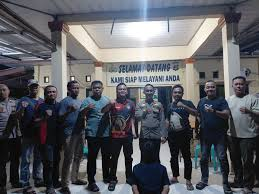
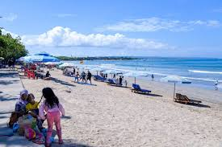

Berita Kriminal
Kerja sama lintas wilayah antar kepolisian kembali membuahkan hasil. Tim gabungan yang terdiri dari Unit Reskrim Polsek Sukoharjo,
Tim Tekab 308 Presisi Polres Pringsewu, dan Unit Reskrim Polsek Bumi Ratu Nuban Polres Lampung Tengah berhasil menangkap tersangka pencurian satu unit
truk Mitsubishi engkel milik Agus Triyantoro.
Selengkapnya
Berita Teknologi
Teknologi, satu kata yang sangat berperan penuh dalam perkembangan kehidupan manusia saat ini.
Diera seperti saat ini mungkin hampir sebagian penduduk diseluruh dunia termasuk di Indonesia sendiri pun sudah menikmati
kemajuan teknologi. Berbicara tentang teknologi tidak akan terpisahkan dengan internet dan Gadget yang merupakan hasil dari teknologi itu sendiri..
Selengkapnya

Berita Hiburan
Upaya pemerintah Indonesia untuk menggenjot pariwisata pulau resor Bali yang terkenal pascapandemi COVID-19 membuahkan hasil,
ditandai dengan meningkatnya jumlah wisatawan domestik dan mancanegara yang berlibur di pulau tersebut.
Selengkapnya
Berita Politik
Prabowo meminta seluruh pihak termasuk partai politik bisa terus menjaga persatuan. Menurut Prabowo, persatuan antarpartai
politik tersebut dapat mendorong Indonesia yang adil dan makmur.
Selengkapnya
Berita Korupsi
Sejumlah kasus dugaan korupsi mencuri perhatian publik di awal tahun ini,
hingga Maret 2025. Kerugian negara akibat kasus-kasus ditaksir mencapai triliunan rupiah.
Perkara rasuah ini pun terjadi di berbagai sektor, mulai dari perbankan, lembaga pembiayaan negara, hingga minyak dan gas. .
Selengkapnya